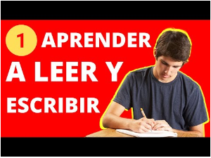
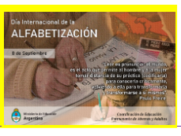
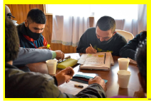
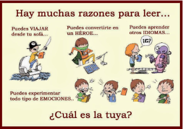
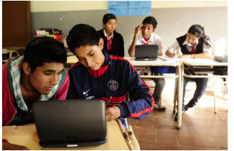
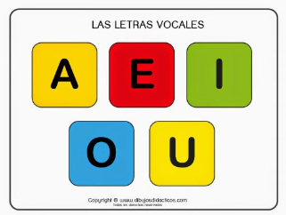
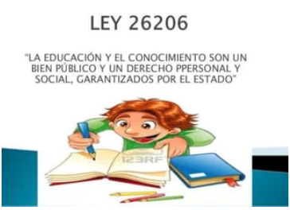
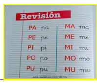
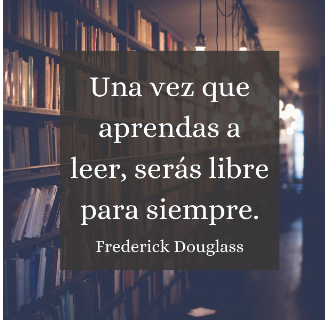

- SOCIALES Y LA INCLUSION EDUCATIVA 
- ROMPIENDO BARRERAS DESARROLLO LNCLUSIVO
- Estuvimos articulando la eps (cs.sociales)con primaria, con el Maestro Esteban cada lunes 18hs cuando asistimos a formación profesional.El trabajar articulando todas las materia ayuda en mi aprendizaje.En cs.sociales nos enfocamos en las imágenes y letras siguiendo las indicaciones del maestro.       
Ciencias Sociales en la EPS y la inclusíon educativa
Profesora Pagez Stella Maris.Estudiante Villanueva Máximo
